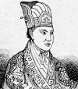

Kendisinin İsa Mesih’in kardeşi olduğuna inanan Hong Xiuquan (1814–1864), 1851 yılında tarihin en kanlı savaşlarından birini başlattı. Çin İmparatoru’nu devirmek ve kendisini Çin’in Hıristiyan monarkı ilan etmeyi planlıyordu.

Taiping İsyanı olarak bilinen savaş on üç yıl sürecek ve yaklaşık 35 milyon asker ve sivilin ölümüne neden olacaktı. İlk başlarda kendi “Göksel Barış Krallığı” için geniş toprakları ele geçirmeyi başarsa da Avrupalı devletler imparatoru desteklemek için asker gönderince işler değişmeye başladı. Hong, savaşı kaybetmeden kısa süre önce intihar etti.
Hong, Güney Çinli gelecek vaat eden bir öğretmendi. Kamu hizmetine girmek için gereken sınavı bir türlü geçemiyordu. 1837 yılında sınavda tekrar başarısız olmasının ardından büyük bir bunalıma girdi. Birtakım hayaller görmeye başladı. Rüyasında Tanrı’nın kendisine görünüp dünyayı şeytana tapanlardan temizlemesini söylediğini ileri sürüyordu. Hayaller ilgisinin Hıristiyanlığa yönelmesine neden oldu. Batılı misyonerler sayesinde Çin, Hıristiyanlıkla çoktan tanışmıştı.
Hong hayaller görmeye başladığı sırada Çin karmaşık bir dönemden geçiyordu. 19. yy başlarında halk su baskınları, kuraklık, açlık ve yabancı istilası nedeniyle büyük bir acı içindeydi. Pek çok Çinli, yaşanan felaketlerden Qing İmparatoru’nu sorumlu tutuyordu. Bu koşullar Hong gibi dini ve politik muhalifler için son derece verimli bir ortam sağlıyordu.
Bir Amerikan misyonerinden dini eğitim alan Hong, 1840’lar boyunca vaazlar verip taraftar topladı. Yandaşlarının çoğu Güneybatı Çin’dendi. Qing İmparatorluğu’nda putperestlik yapılarak Hıristiyanlığa karşı gelindiğini vaaz ediyordu.
İsyan 1851 yılında başladı. Hong’un kuvvetleri Nanjing şehrini 1853 yılında ele geçirdiler. Şehri başkent ilan ettiler. Kumarı, afyonu ve köleliği yasaklayan yasalar çıkartıldı. Eski bir Çin adeti olan kadınların ayaklarının bağlanmasına da yasak getirildi (Hong her ne kadar çok eşliliği yasaklayan bir buyruk çıkarmış olsa da kendisine ait bir haremi de vardı).
İmparator, 1860’tan sonra Fransa ve İngiltere tarafından desteklenmeye başlandı. Hong 1864 yılında intihar etti. Oğlu kısa bir süre için isyanı devam ettirmeye çalışsa da yıl sonuna doğru o da yenildi.
Ek Bilgiler
1- Hong’un taraftarlarına dağıttığı İncil tercümesinin bazı bölümleri değiştirilmişti. Örneğin Yahuda’nın merhum oğlunun dul karısıyla cinsel ilişkiye girdiği bölüm Genesis’ten çıkartılmış, Kral Davud’un unvanı da “Markiz” olarak değiştirilmişti.
2- Hong’a Hıristiyanlığı anlatan Tennessee doğumlu Amerikalı vaiz Issachar J. Roberts (1802–1871) Hong’un hükümetinde dış işleri bakanlığı yaptı.
3- Taiping İsyanı bitince genç kadınların ayaklarını bağlama adeti Çin’de yeniden yaygınlaştı. 1911 yılına kadar bu adet yasaklanmadı. Daha sonra da gizlice devam ettiği tahmin edilmektedir. Çin’deki bazı yaşlı kadınlar bu uygulamadan kaynaklanan deformasyonlarla yaşamak zorundadırlar.